| Astoft |
| Aunsby,
Lincolnshire - St Thomas a Becket Church 12th century Click on photos to enlarge |
||||
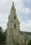 |
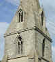 |
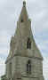 |
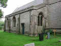 |
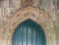 |
|
The west
tower is of the later 13th century. The bell-openings have Geometrical
tracery with a trefoil in a circle, a quatrefoil in a circle, Y-tracery,
and a pointed-trefoiled head instead of other tracery (first
and last may be seen above). Shortish broach spire with two
tiers of lucarnes in alternating directions. Y-tracery (and
Geometrical tracery). The very top of the spire is Perp and has
the inscription Ave Maria. The tower buttressing shows that the rebuilding
of the aisles was begun after the tower. The S aisle has two-light windows
with flowing tracery (not shown). ... The
N aisle, being Perpendicular, is a little later still (shown above).
Very nice S doorway. One moulding beset with fleurons. Thin buttress
shafts l. and r. Crocketed gable. |
||||
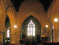 |
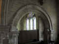 |
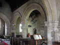 |
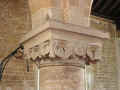 |
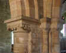 |
|
A specially rewarding church. Examination ought to begin inside with the Norman responds of the chancel arch. They are triple, and the scallop capitals indicate the first half of the C12. Of the same time the one-bay N chapel arch. Again scallop capitals. The arch here is original and has one step and one chamfer. To this church, later in the C12, a N aisle was added. Two bays, circular pier, square abacus, uncommonly good leaf capitals, partly unfinished. The round arches of one step and one chamfer are rebuilt. |
||||
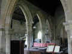 |
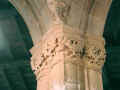 |
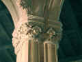 |
||
|
The S
arcade of three bays with slender piers on the borderline between Dec and
Perp (mid-C14). Quatrefoils with hollows in
the diagonals between the spurs. Bases and abaci already polygonal. Varied
leaf capitals. Arches with sunk quadrant mouldings. Hoodmoulds with
grotesque stops. |
||||
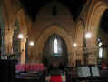 |
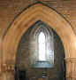 |
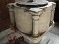 |
||
|
The C13 tower arch
to the nave is is triple-chamfered. The responds are triple with
continuous hollows between the foils and the fillets. |
||||
| Home | Architecture Index | Email: astoft.freedom010@passmail.net | |
All photographic images on this website are copyright the website owner 2001 or later unless otherwise stated. Email contact above. Full resolution originals are available for approved purposes.